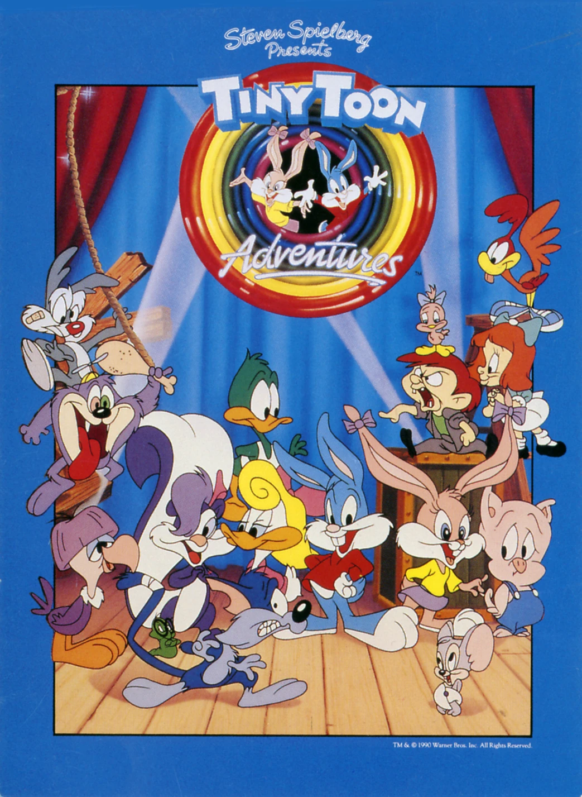

Saint Seiya, ou Os Cavaleiros do Zodíaco, é uma série escrita e ilustrada por Masami Kurumada que começou a ser publicada em mangá no final de 1985. No ano seguinte, a obra ganhou uma adaptação em anime, que se tornou extremamente popular no Brasil na década de 1990.
He-Man e os Mestres do Universo
O jovem Adam e seus amigos descobrem o lendário poder de Grayskull e aceitam a missão de defender Eternia do temível Esqueleto.
Tiny Toon
Uma nova geração de Looney Tunes estuda na Looniversidade de Acme City sob a instrução dos grandes professores do passado.

Caverna do Dragão
Um grupo de crianças vai a um parque de diversões e lá se deparam com o brinquedo Caverna do Dragão. Ao entrarem nele, são enviados a um mundo mágico, aonde vivem muitas aventuras e contam com a ajuda de Mestre dos Magos para tentar voltar para casa.
She-Ra: A Princesa do Poder
She-Ra é Adora, irmã gêmea de He-Man. Ela luta para libertar o planeta Eternia da ditadura de Horda, liderada pelo tirano Hordak e seu exército de mutantes.
=======
Exercício
Nostalgia Animada: Desenhos dos anos 80 e 90
Os Cavaleiros do Zodíaco
Saint Seiya, ou Os Cavaleiros do Zodíaco, é uma série escrita e ilustrada por Masami Kurumada que começou a ser publicada em mangá no final de 1985. No ano seguinte, a obra ganhou uma adaptação em anime, que se tornou extremamente popular no Brasil na década de 1990.
He-Man e os Mestres do Universo
O jovem Adam e seus amigos descobrem o lendário poder de Grayskull e aceitam a missão de defender Eternia do temível Esqueleto.
Tiny Toon
Uma nova geração de Looney Tunes estuda na Looniversidade de Acme City sob a instrução dos grandes professores do passado.
Caverna do Dragão
Um grupo de crianças vai a um parque de diversões e lá se deparam com o brinquedo Caverna do Dragão. Ao entrarem nele, são enviados a um mundo mágico, aonde vivem muitas aventuras e contam com a ajuda de Mestre dos Magos para tentar voltar para casa.
She-Ra: A Princesa do Poder
She-Ra é Adora, irmã gêmea de He-Man. Ela luta para libertar o planeta Eternia da ditadura de Horda, liderada pelo tirano Hordak e seu exército de mutantes.